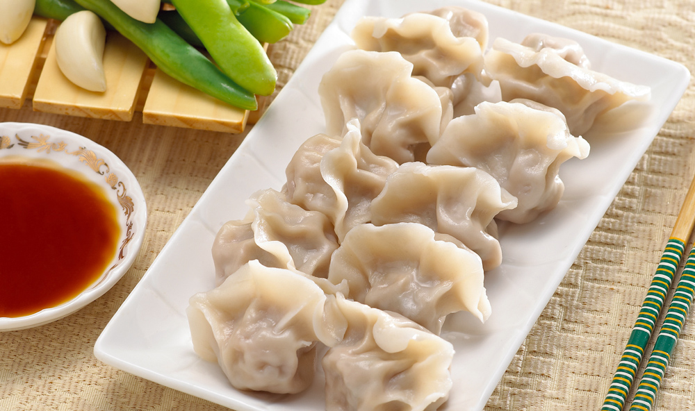
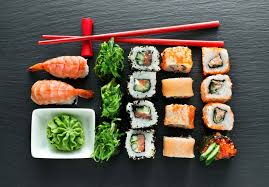
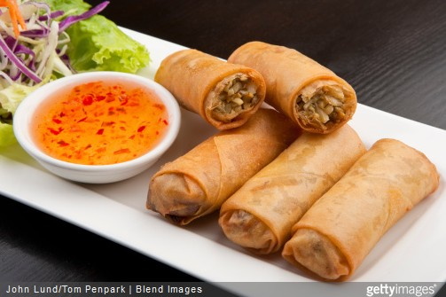

Les spécialités asiatiques à tester
Les Raviolis chinois
Les raviolis chinois (jiǎozi 饺子 en Chine)sont souvent en forme de demi-lune évoquant celle de petits lingots d’argent appelées yuanbao. Les jiaozi sont ainsi généralement consommés lors de la Fête du printemps ou autrement dit Nouvel An chinois afin d'apporter richesse pour la nouvelle année.
Le sushi japonais
Le sushi est un plat traditionnel japonais, composé d'un riz vinaigré appelé shari combiné avec un autre ingrédient appelé neta qui est habituellement du poisson cru ou des fruits de mer.
Les nems vietnamiens
Un nem ou rouleau impérial ou nem rán ou chả giò ou fried spring roll, spring roll ou vietnamese roll est une spécialité culinaire traditionnelle emblématique de la cuisine vietnamienne, à base de beignet salé farci frit entouré d’une galette de riz.
